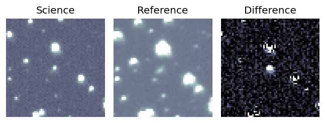
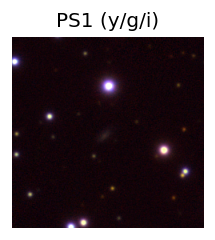
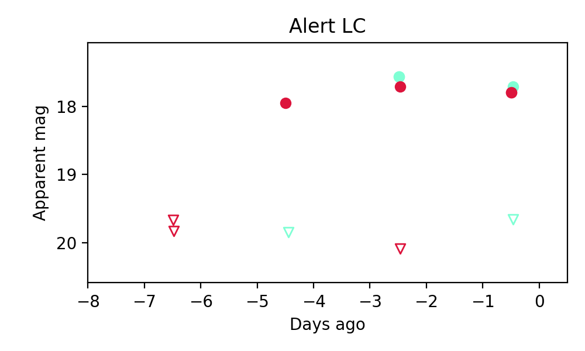

Candidate List 20231022Previous Day Next Day
Section 1: New Sources (age<1d) Section 2: Old (1-5d) sources observed last nightplaceholder
Section 2: Older Sources Observed Last Night (1)
0. ZTF23ableqsp (Afterglow?FBOT?) (TNS: A) [Back to Top] [Share] [Trigger Swift] [Fritz] [Lasair]RA, Dec: 269.14335, 8.04371 17h56m34.40s, 8d 2m37.37sGalactic (l, b): 33.97295, 15.8283 ext(g-r) = 0.221
PS1: 1 source in 3 arcsec Closest: d = 1.23 arcsec photoz=0.13+/-0.02 peak abs mag = -22.16
LegacySurvey: 0 sources in 3 arcsec

Extinction-corrected gr color:
From alerts: -0.31 +/- 0.08 mag
Rise Rate:
g: 1.16 mag/day
r: 1.17 mag/day
i: -99 mag/day
Fade Rate:
g: 1.04 mag/day
r: 1.05 mag/day
i: -99 mag/day